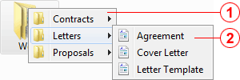

Folder Menus enables the display of hierarchical menus which mimic your computer's directory structure. This is the core functionality of KO Approach, its spirit and the reason the program came to existence!
When you click an item, KO Approach intercepts the click and "sneaks in," creating an inventory of all files and folders located inside. It then processes the content, organizes it according to the settings you have chosen, and displays it in the form of a menu:

Initial menu
Appears while the left mouse key is deppressed.
Child menu
Appears after the mouse key has been released.
Unlike many other desktop utilities, KO Approach can handle folder shortcuts as if they were real folders, which allows you to navigate their menus and quickly access items inside.
Folder Menus also allows you to preview, or listen to, certain kinds of files. This is achieved by installing plug-ins such as Scope, InstantWave, or InstantTxt.